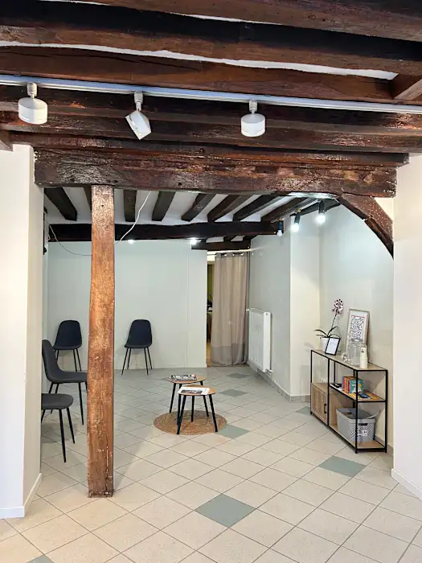

Accompagner la croissance en douceur
L'enfance est une période de transformations rapides. Des gestes doux et adaptés aident l'enfant à grandir en équilibre, à mieux dormir et à s'épanouir, du plus jeune âge à l'adolescence.
Une ostéopathie pensée pour les plus jeunes
Chez l'enfant, l'ostéopathe utilise exclusivement des techniques douces, indolores et respectueuses du corps en développement.
Qu'il s'agisse de troubles de la posture, de difficultés de sommeil ou de tensions liées à la croissance, j'adapte chaque séance à l'âge, au tempérament et au confort de votre enfant — toujours dans un climat de jeu et de confiance.
- Techniques douces uniquementAucun geste brusque, dans le plus grand respect du corps de l'enfant.
- Un cadre rassurantLes parents sont présents tout au long de la séance.
- En complément du médecinL'ostéopathie ne remplace pas le suivi pédiatrique habituel.

Dans quels cas consulter pour son enfant ?
Troubles posturaux
Dos rond, attitude scoliotique, asymétries et douleurs de croissance.
Sommeil & agitation
Difficultés d'endormissement, sommeil agité, nervosité et irritabilité.
Concentration
Maux de tête, fatigue scolaire et difficultés de concentration.
Suites d'ORL
Otites à répétition, sinusites et troubles de la sphère ORL en complément médical.
Suivi orthodontique
Accompagnement des traitements dentaires et des tensions de la mâchoire.
Chutes & chocs
Petits traumatismes du quotidien et reprise d'activité après une chute.
Réservez une consultation
Prenez rendez-vous en ligne, simplement, à l'horaire qui convient à votre famille.